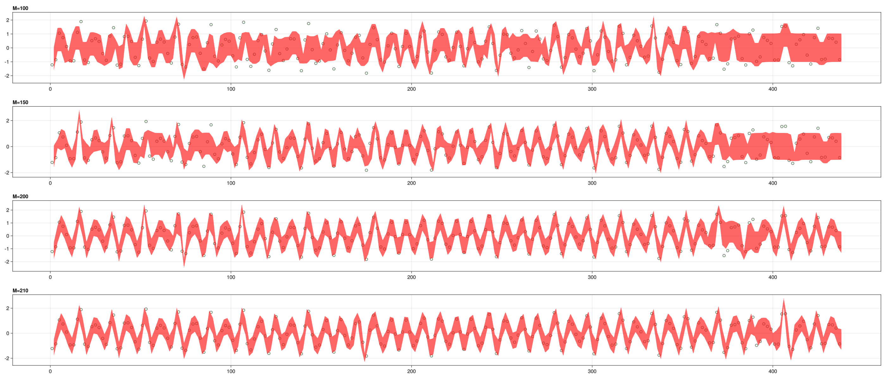

Code
include("./utils.jl")
using AugmentedGaussianProcesses
using CSV,TableTransforms,Random
using GLMakiemath4mads
October 1, 2023
kaggle tide predict, 数据解压缩有 400MB,所有没有全部使用,截取了名为 截取了名为Aranmore 水文站的数据 本仓库 tsData 文件夹中 df1=load_csv("Aranmore-2017-odm")
df2=load_csv("Aranmore-2018-odm")
df3=load_csv("Aranmore-2019-odm")
selected_data=[df[1:200:end,:Water_Level_ODM] for df in [df1,df2,df3]]
rows=size(selected_data[1],1)
X=[1:rows...].|>Float64
y=selected_data[1]|>Vector
X_train = X[1:2:end];
y_train = y[1:2:end]; # We split the data equally
X_test = X[2:2:end];
y_test = y[2:2:end];
display(first(selected_data,10))3-element Vector{Vector{Float64}}:
[-1.22, 1.27, -0.85, 0.17, 1.06, -1.06, 0.74, -0.54, 0.1, 0.79 … -0.81, 0.5, 0.7, -0.73, 0.67, -0.66, 0.41, 0.63, -0.85, 1.46]
[-1.11, 0.21, 1.08, -1.66, 2.05, -0.46, -0.59, 1.01, -1.17, 1.22 … 0.84, -1.51, 1.93, -0.64, -0.4, 0.77, -1.16, 1.36, -0.3, -0.09]
[0.32, -0.93, 1.2, -0.52, -0.05, 1.2, -1.34, 0.85, 0.22, -0.91 … 1.5, -0.72, 0.07, 1.2, -1.48, 1.17, -0.11, -0.62, 1.63, -0.78] σ = 0.05
Ms = [100,150,200,210]; #选取参考点数
models = Vector{AbstractGPModel}(undef, length(Ms));
function agp(X,y)
kernel = SqExponentialKernel()+ PeriodicKernel()
for (index, num_inducing) in enumerate(Ms)
@info "Training with $(num_inducing) points"
m = SVGP(
kernel, # Kernel
GaussianLikelihood(σ), # Likelihood used
AnalyticVI(), # Inference usede to solve the problem
inducingpoints(KmeansAlg(num_inducing), X); # Inducing points initialized with kmeans
optimiser=false, # Keep kernel parameters fixed
Zoptimiser=false, # Keep inducing points locations fixed
)
@time train!(m, X, y, 100) # Train the model for 100 iterations
models[index] = m # Save the model in the array
end
endagp (generic function with 1 method) function plot_models(models)
fig=Figure(resolution=(2800,1200))
for (idx,model) in enumerate(models)
y_grid, sig_y_grid = proba_y(model, X_test)
local ax1=Axis(fig[idx,1],title="M=$(Ms[idx])",titlealign = :left)
scatter!(ax1,X_train,y_train,marker=:circle,markersize=10,color=(:lightgreen,0.2),strokewidth=1,strokecolor=:black)
σ_arr=sqrt.(sig_y_grid)
band!(ax1,X_test,y_grid-σ_arr,y_grid+σ_arr,color=(:red,0.6))
end
fig
#save("agp-tide-predict-odm-2.png",fig)
endplot_models (generic function with 1 method)[ Info: Training with 100 points
[ Info: Training with 150 points
[ Info: Training with 200 points
[ Info: Training with 210 points 3.823105 seconds (5.97 M allocations: 529.096 MiB, 6.16% gc time, 96.19% compilation time)
0.194146 seconds (124.53 k allocations: 268.146 MiB, 13.12% gc time)
0.328468 seconds (181.33 k allocations: 435.561 MiB, 8.53% gc time)
0.341053 seconds (193.89 k allocations: 473.747 MiB, 7.59% gc time)